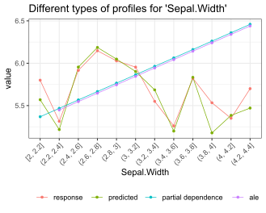
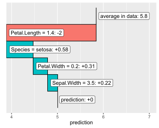

Overview
The goal of this package is shed light on black box machine learning models.
The main props of {flashlight}:
- It is simple, yet flexible.
- It offers model agnostic tools like model performance, variable importance, global surrogate models, ICE profiles, partial dependence, ALE, and further effects plots, scatter plots, interaction strength, and variable contribution breakdown/SHAP for single observations.
- It allows to assess multiple models side-by-side.
- It supports “group by” operations.
- It works with case weights.
Currently, models with numeric or binary response are supported.
Installation
# From CRAN
install.packages("flashlight")
# Development version
devtools::install_github("mayer79/flashlight")Usage
Let’s start with an iris example. For simplicity, we do not split the data into training and testing/validation sets.
library(ggplot2)
library(MetricsWeighted)
library(flashlight)
fit_lm <- lm(Sepal.Length ~ ., data = iris)
# Make explainer object
fl_lm <- flashlight(
model = fit_lm,
data = iris,
y = "Sepal.Length",
label = "lm",
metrics = list(RMSE = rmse, `R-squared` = r_squared)
)Performance
fl_lm |>
light_performance() |>
plot(fill = "darkred") +
labs(x = element_blank(), title = "Performance on training data")
fl_lm |>
light_performance(by = "Species") |>
plot(fill = "darkred") +
ggtitle("Performance split by Species")


Permutation importance regarding first metric
Error bars represent standard errors, i.e., the uncertainty of the estimated importance.
fl_lm |>
light_importance(m_repetitions = 4) |>
plot(fill = "darkred") +
labs(title = "Permutation importance", y = "Increase in RMSE")
ICE curves for Petal.Width
fl_lm |>
light_ice("Sepal.Width", n_max = 200) |>
plot(alpha = 0.3, color = "chartreuse4") +
labs(title = "ICE curves for 'Sepal.Width'", y = "Prediction")
fl_lm |>
light_ice("Sepal.Width", n_max = 200, center = "middle") |>
plot(alpha = 0.3, color = "chartreuse4") +
labs(title = "c-ICE curves for 'Sepal.Width'", y = "Prediction (centered)")


PDPs
fl_lm |>
light_profile("Sepal.Width", n_bins = 40) |>
plot() +
ggtitle("PDP for 'Sepal.Width'")
fl_lm |>
light_profile("Sepal.Width", n_bins = 40, by = "Species") |>
plot() +
ggtitle("Same grouped by 'Species'")


ALE
fl_lm |>
light_profile("Sepal.Width", type = "ale") |>
plot() +
ggtitle("ALE plot for 'Sepal.Width'")
Different profile plots in one
fl_lm |>
light_effects("Sepal.Width") |>
plot(use = "all") +
ggtitle("Different types of profiles for 'Sepal.Width'")
Variable contribution breakdown for single observation
fl_lm |>
light_breakdown(new_obs = iris[1, ]) |>
plot()

Multiple models
Multiple flashlights can be combined to a multiflashlight.
library(rpart)
fit_tree <- rpart(
Sepal.Length ~ .,
data = iris,
control = list(cp = 0, xval = 0, maxdepth = 5)
)
# Make explainer object
fl_tree <- flashlight(
model = fit_tree,
data = iris,
y = "Sepal.Length",
label = "tree",
metrics = list(RMSE = rmse, `R-squared` = r_squared)
)
# Combine with other explainer
fls <- multiflashlight(list(fl_tree, fl_lm))
fls |>
light_performance() |>
plot(fill = "chartreuse4") +
labs(x = "Model", title = "Performance")
fls |>
light_profile("Petal.Length", n_bins = 40, by = "Species") |>
plot() +
ggtitle("PDP by Species")